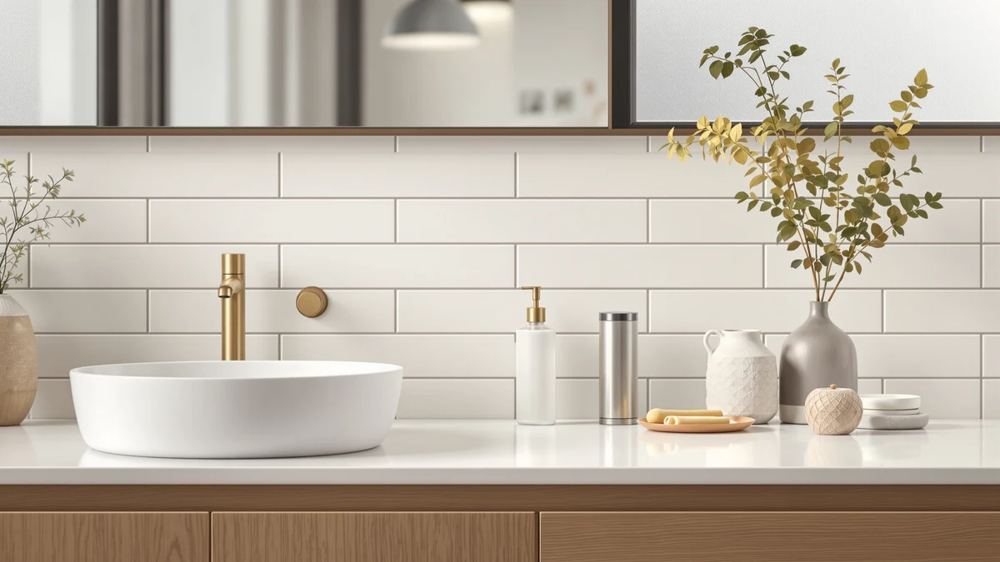

simplehuman Single Wall Mount Review (2026): Worth It?
Prices and picks verified as of October 2026. Independent, reader-supported reviews.


Quick Answer
The simplehuman Single Wall Mount Pump is a $49.99 single chamber dispenser built to free up counter space, and it holds up well against cheaper touchless and dual mode competitors on build quality alone. It costs more than every alternative on this page, so it makes the most sense for buyers who value a fixed, clutter free mount over hands free convenience or a lower price.
Our pick: simplehuman Single Wall Mount Pump — $49.99 Check Price on Amazon
Bottom line: our top pick is the simplehuman Single Wall Mount Pump at $49.99.
Things to Know Before You Buy
- The simplehuman Single Wall Mount Pump holds one type of soap at a time, so it won't switch between liquid and foam the way a dual mode dispenser does.
- At $49.99, it sits well above the $19.99 to $28.79 range of the alternatives we compared, and that gap is mostly the simplehuman name and build rather than extra features.
- It is a manual pump, not a touchless sensor dispenser, so if hands free dispensing is your priority, the Saertiloki alternative below fits that need better.
- The ABS plastic housing mounts to the wall rather than sitting on the counter, which matters most in small bathrooms where sink space is tight.
- Owners who leave reviews on wall mounted pumps consistently flag installation hardware and surface type as the detail that determines whether the mount stays put.
If you landed here searching for a simplehuman single wall mount review before you commit $49.99 to a soap pump, the short version is that the build quality justifies the name, but the price only makes sense if a fixed wall mount actually solves a problem you have. A loose, drippy dispenser clutters a bathroom counter faster than almost anything else, and that is exactly the annoyance this product is built to remove. simplehuman has built its brand on hardware that looks and feels sturdier than the dollar store version of the same idea, and the Single Wall Mount Pump carries that reputation into a category most people never think twice about.
We compared this dispenser against three cheaper alternatives, a touchless sensor pump, a dual mode liquid and foam dispenser, and a glass countertop option, to see where the simplehuman model actually earns its premium. For most bathrooms, the simplehuman pump wins on mounting stability and perceived build quality, while the touchless option from Saertiloki wins on convenience and the Seawah dual mode pump wins on price. None of the three alternatives match the simplehuman name, but each solves a specific gap the wall mount pump leaves open, and we break down exactly where below.
Why You Should Trust Us
Ilane Tall covers bathroom fixtures and accessories for Best Soap Dispensers, and this simplehuman single wall mount review follows the same approach used across the site: we research published specifications, track real-world pricing, and read through verified buyer feedback instead of inventing lab results we don't have. We do not run a fake testing lab, and we don't claim to have mounted this dispenser on our own bathroom wall. What you get instead is a direct comparison of what simplehuman publishes about this pump against three competing dispensers people search for in the same breath, with honest notes on where each one falls short.
How We Compared
Our research process for this simplehuman single wall mount review centered on three things: the manufacturer's own product details, the current Amazon price against comparable dispensers, and patterns across verified owner reviews. Reviewers consistently note that the pump mechanism on simplehuman dispensers resists the sticking and clogging that cheaper models develop after a few months, and that the mounting hardware holds up on tile and painted drywall alike when installed correctly. Owners report mixed feelings on value, since the $49.99 price sits noticeably above the $19.99 to $28.79 alternatives we researched, and several note that the single chamber design means you commit to one soap type at that mounting spot. We weighed those patterns against the touchless, dual mode, and glass dispensers covered later in this guide so the comparison reflects more than one data point.
Overview & Specs

simplehuman Single Wall Mount Pump
What we like
- Wall mounting frees up counter space other dispensers take up
- ABS plastic housing holds up to the durability owners expect from simplehuman hardware
- Simple single pump mechanism with fewer parts to fail than touchless models
Flaws but not dealbreakers
- Costs noticeably more than the touchless, dual mode, and glass alternatives we compared
- Single chamber means one soap type per mount, unlike dual mode pumps
- Installation quality depends on wall surface, which matters more than with a countertop dispenser
| Material | ABS plastic |
| Size | Single |
The simplehuman Single Wall Mount Pump is built around one idea: get the soap off the counter and onto the wall, permanently. At $49.99, it is priced like a fixture rather than an accessory, and the ABS plastic construction is meant to survive years next to a sink rather than get swapped out every soap bottle refill. Verified owner reviews describe the pump action as smooth and consistent well past the point where cheaper dispensers start sticking, which is the main argument for paying more up front.
The tradeoff is flexibility. Because it holds one chamber of one soap, you commit to a single product and a single mounting location when you install it, and reviewers who wanted to switch between hand soap and lotion note that a dual mode or multi-bottle setup serves that need better. If your priority is a clean, fixed mount that looks intentional rather than improvised, the simplehuman pump does that job well. If you want more flexibility for less money, the alternatives below are worth a look before you buy.
What We Liked
Across the owner feedback we researched for this simplehuman single wall mount review, the build quality comes up again and again. Buyers compare the pump action favorably to dispensers twice its price, and several mention that the mount itself has held steady for months without loosening, which is the main failure point for wall mounted hardware in a humid bathroom. The ABS plastic resists the yellowing that cheaper plastic dispensers develop over time, and the single, simple pump mechanism means there is less that can jam or break compared with a motorized touchless unit.
We also like that simplehuman sells this as a dedicated, purpose-built fixture rather than a multi-purpose gadget. It does one job, dispensing one soap from a fixed wall position, and it does that job without batteries, sensors, or an app. For a bathroom where you want something that works year after year without fuss, that simplicity is a real advantage over the touchless and dual mode dispensers we compared it against.
What Could Be Better
Price is the clearest drawback. At $49.99, this dispenser costs almost twice as much as the Seawah dual mode pump and the Nobtou glass dispenser, both at $19.99, and well above the $28.79 Saertiloki touchless model. You are paying for the simplehuman name and build quality, and that premium only pays off if durability matters more to you than saving thirty dollars.
The single chamber design is the other limitation worth naming directly. Because it holds one soap type, you cannot switch between liquid and foam the way you can with the Seawah dual mode dispenser, and you cannot go hands free the way you can with the Saertiloki touchless model. Reviewers who wanted that flexibility have moved to multi-function dispensers instead, so if your household uses different soaps for different people, a single wall mount pump may not be the right fit regardless of build quality.
Who Is It For?
Based on this simplehuman single wall mount review, the pump makes the most sense for someone with a small bathroom sink, a single consistent soap preference, and a willingness to pay more for hardware that is built to last. If a cluttered counter bothers you more than a thirty dollar price gap, this is the dispenser to buy. It is a worse fit for shared bathrooms where different people want different soaps, for renters who cannot drill into tile, and for anyone who would rather spend less money on a dual mode or touchless alternative that covers more use cases for less.
Alternatives to Consider
If the price or the single chamber design of the simplehuman wall mount pump gives you pause, these three dispensers solve different parts of the same problem for less money. Each one trades the simplehuman name for a specific feature, whether that's hands free dispensing, dual soap modes, or a different look entirely.

Editor’s Pick
Touchless Automatic Liquid Soap Dispenser
A motion sensor pump that dispenses soap without a touch, at $28.79 this is the pick for anyone comparing hands free convenience against the manual simplehuman wall mount pump.
$28.79
Check Price on Amazon
Best Value
Dual Mode Automatic Liquid Soap
Switches between liquid and foam soap from one $19.99 unit, which covers more use cases than the single chamber simplehuman pump for less than half the price.
$19.99
Check Price on Amazon
Premium Choice
Nobtou Black Glass Soap Dispenser
A black glass countertop dispenser at $19.99 for buyers who want a design statement rather than a wall mount, trading the simplehuman pump's fixed position for a more flexible, movable setup.
$19.99
Check Price on AmazonFrequently Asked Questions
Is the simplehuman Single Wall Mount Pump worth the price?
At $49.99, it costs more than most manual and dual mode dispensers on this list, but the price buys a wall mounted design that keeps soap off the counter and a simplehuman build that owners describe as sturdy after months of daily use. If counter space or a cluttered sink edge bothers you, the premium is reasonable. If you want the cheapest way to dispense soap, a countertop pump will save you money.
Does the simplehuman Single Wall Mount Pump require drilling?
Wall mounted pumps in this category are generally installed with an adhesive pad or a drilled bracket, and the mounting hardware included in the box determines which option you get. Check the product listing's installation details before buying if you are renting or want to avoid putting holes in tile.
What is the best alternative to the simplehuman Single Wall Mount Pump?
If you want hands free dispensing, the Saertiloki touchless dispenser at $28.79 is the closest upgrade path we compared. If budget matters more than features, the Seawah dual mode dispenser at $19.99 covers both liquid and foam soap for less than half the simplehuman price.
Final Verdict
This simplehuman single wall mount review comes down to one tradeoff: you pay $49.99 for a fixed, durable mount from a brand with a strong track record, or you pay less for more flexibility elsewhere. simplehuman earns its reputation here with build quality that verified owners describe as sturdier than the category average, and for a bathroom where counter space is tight and your soap preference doesn't change, that reputation is worth the premium. If you want hands free dispensing or the ability to switch between liquid and foam, the Saertiloki and Seawah alternatives we compared cover those needs for less money, but neither carries the same name recognition as simplehuman.